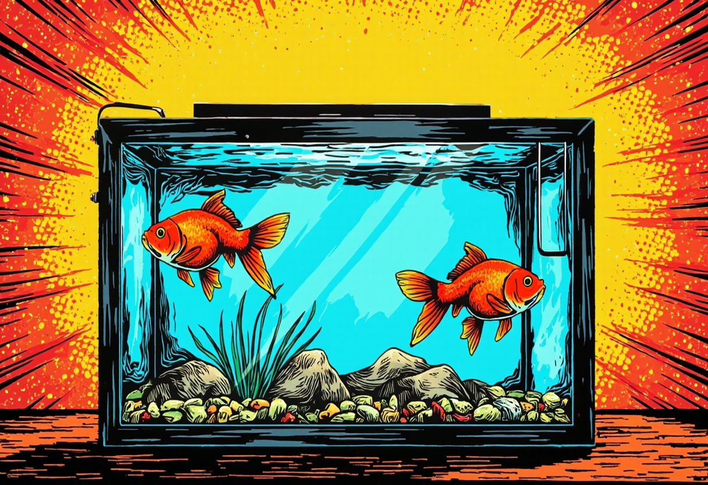

Kaltwasser-Aquarium: Fische, Pflanzen und Technik ohne Heizer richtig planen
Ein Kaltwasser-Aquarium erfreut sich wachsender Beliebtheit – und das aus gutem Grund. Während die meisten Aquarianer auf beheizte Becken mit tropischen Fischen setzen, bietet ein Aquarium ohne Heizung zahlreiche Vorteile: geringere Betriebskosten, weniger Technik und die Möglichkeit, faszinierende einheimische oder anspruchslose Fischarten zu pflegen. In diesem Guide erfährst du, wie du ein Kaltwasser-Becken von der Planung bis zur Pflege richtig umsetzt.

1. Kaltwasser richtig definieren
Ein Kaltwasser-Aquarium wird ohne Heizstab betrieben und orientiert sich an der natürlichen Raumtemperatur des Aufstellungsortes. Anders als tropische Aquarien, die ganzjährig auf 24–28 °C geheizt werden, liegt der typische Temperaturbereich eines Kaltwasser-Beckens zwischen 10 und 22 °C – je nach Jahreszeit und Raumklima.
Wichtig zu verstehen: „Kaltwasser" bedeutet nicht „eiskaltes Wasser". Die meisten Kaltwasserfische stammen aus gemäßigten Klimazonen und vertragen Temperaturen um 18–20 °C dauerhaft sehr gut. In den Wintermonaten kann die Temperatur auf 10–14 °C sinken, was für viele Arten sogar wichtig für die natürliche Jahreszeiten-Rhythmik ist.
Zu den typischen Kaltwasser-Bewohnern zählen:
- Goldfische (Carassius auratus) – Der Klassiker unter den Kaltwasserfischen
- Bitterlinge (Rhodeus amarus) – Farbenprächtige heimische Fische
- Moderlieschen (Leucaspius delineatus) – Schwarmfische fürs Kaltwasser
- Stichlinge (Gasterosteidae) – Interessante Einzelfische
- Elritzen (Phoxinus phoxinus) – Lebhafte Schwarmbewohner
- Goldorfen (Leuciscus idus) – Für große Becken und Gartenteiche
Merke: Der Verzicht auf die Heizung spart nicht nur Strom, sondern macht das Aquarium auch deutlich ausfallsicherer. Bei einem Stromausfall tropischer Becken droht schnell eine lebensgefährliche Abkühlung – im Kaltwasser-Aquarium ist das kein Problem.
2. Geeignete Fischarten im Detail
Goldfische – Die Klassiker
Goldfische sind die bekanntesten Kaltwasserfische. Sie werden oft unterschätzt: Tatsächlich können Goldfische bis zu 30 cm groß werden und benötigen entsprechend viel Platz. Für ein Goldenes Paar empfehlen wir ein Becken ab 100–150 Litern. Schleierschwänze, Ryukins oder Sarasa-Goldfische sind etwas anspruchsvoller in der Haltung als die einfachen Wildfarbenen. Goldfische mögen es kühl (16–22 °C) und sauber – eine gute Filterung ist Pflicht.
Bitterlinge – Farbe im Kaltwasserbecken
Bitterlinge zählen zu den schönsten heimischen Süßwasserfischen. Zur Laichzeit entwickeln die Männchen eine intensive Regenbogenfärbung. Sie benötigen Große Teichmuscheln (Unio oder Anodonta), da sie ihre Eier darin ablegen. Die Haltung gelingt ab 100 Litern, Wassertemperatur zwischen 12 und 22 °C.
Moderlieschen – Schwarmfische mit Charme
Diese kleinen, silbrig glänzenden Fische werden nur 6–9 cm groß und fühlen sich in Schwärmen ab 10 Tieren wohl. Sie sind ideal für Einsteiger, da sie sehr robust sind und Temperaturschwankungen zwischen 4 und 22 °C problemlos wegstecken. Ein Becken ab 80 Litern reicht für eine Gruppe völlig aus.
🛒 Empfohlene Filter für Kaltwasser-Aquarien
Ein leistungsstarker Außenfilter sorgt für sauberes Wasser und ausreichend Sauerstoff – beides essenziell für Kaltwasserfische.
👉 Außenfilter bei Amazon entdeckenElritzen und Goldorfen
Elritzen sind lebhafte, gesellige Schwarmfische, die sich hervorragend für Kaltwasserbecken eignen. Sie bleiben mit 8–12 cm überschaubar und zeigen in der Schwarmhaltung ein faszinierendes Verhalten. Goldorfen hingegen werden bis zu 40 cm groß – sie sind nur für sehr große Becken ab 500 Litern oder den Gartenteich geeignet.
3. Beckengröße und Sauerstoffversorgung
Kaltwasserfische haben einen höheren Sauerstoffbedarf als tropische Fische – kaltes Wasser kann zwar mehr Sauerstoff binden, die meisten Kaltwasserarten stammen aber aus strömungsreichen, sauerstoffgesättigten Gewässern. Eine gute Wasserbewegung und Oberflächenumwälzung ist daher enorm wichtig.
Faustregeln für die Beckengröße:
- Kleine Kaltwasserbecken (ab 60 cm/60 Liter): geeignet für Moderlieschen, kleine Elritzenschwärme
- Mittelgroße Becken (80–100 cm/100–160 Liter): Bitterlinge, Zwerggoldfische, kleine Gruppen
- Große Becken (ab 120 cm/200 Liter): Goldfische, größere Schwärme
- Sehr große Becken (ab 300 Liter): Goldorfen, Koi (eher Teichhaltung)
Empfohlene Technik für die Sauerstoffversorgung:
- Außenfilter mit ausreichender Förderleistung (mind. 3–5-faches Beckenvolumen pro Stunde)
- Ausströmsteine oder Sprudler zur zusätzlichen Sauerstoffanreicherung
- Strömungspumpe für eine gleichmäßige Wasserbewegung
- Oberflächenabschäumer bei Bedarf (vor allem bei feinteiligen Pflanzen)
4. Pflanzen für kühlere Becken
Nicht jede Aquarienpflanze gedeiht bei niedrigen Temperaturen. Viele tropische Pflanzen stellen bei unter 20 °C ihr Wachstum ein. Glücklicherweise gibt es eine Reihe robuster Pflanzen, die auch bei 10–22 °C prächtig wachsen:
Empfohlene Kaltwasser-Pflanzen
- Hornkraut (Ceratophyllum demersum) – Schwimmpflanze, wächst schnell und produziert viel Sauerstoff
- Wasserpest (Elodea canadensis/Egeria densa) – Robust, schnellwachsend, ideal zur Nitratreduktion
- Javafarn (Microsorum pteropus) – Temperaturtolerant, auch bei 15–22 °C unproblematisch
- Javamoos (Taxiphyllum barbieri) – Wachstumsfreudig auch in kühlem Wasser
- Vallisnerien (Vallisneria spiralis) – Gut geeignet, benötigt aber etwas Licht
- Indischer Wasserfreund (Hygrophila polysperma) – Wächst auch bei niedrigeren Temperaturen noch gut
- Zwergfarn (Marsilea hirsuta) – Bodendeckend, winterhart
- Pondweed/Schwimmendes Laichkraut (Potamogeton natans) – Für größere Becken
Einrichtungstipp: Verwende kräftige Beleuchtung (0,3–0,5 Watt pro Liter), da kühlere Temperaturen den Stoffwechsel der Pflanzen verlangsamen. Eine Kombination aus Hintergrundpflanzen (Vallisnerien, Wasserpest) und Vordergrundpflanzen (Zwergfarn, Moos auf Wurzeln) sorgt für eine natürliche Optik.
5. Technik ohne Heizer
Der Verzicht auf die Heizung ist das zentrale Merkmal des Kaltwasser-Aquariums. Trotzdem bleibt die richtige technische Ausstattung entscheidend:
Filter
Ein Außenfilter ist die erste Wahl für Kaltwasserbecken. Er sorgt für mechanische und biologische Filterung und unterstützt die Sauerstoffanreicherung durch die Wasserzirkulation. Die Filterleistung sollte etwas höher dimensioniert sein als bei tropischen Becken, da Kaltwasserfische einen höheren Stoffwechselumsatz und mehr Nährstoffeintrag (besonders Goldfische) haben.
Beleuchtung
Für Pflanzenwachstum ist eine LED-Beleuchtung mit ausreichender Lichtstärke wichtig. Eine Beleuchtungsdauer von 8–10 Stunden pro Tag hat sich bewährt. Da Kaltwasserbecken häufig in Wohnräumen stehen, empfiehlt sich eine Zeitschaltuhr für konstante Lichtverhältnisse.
Sonstige Technik
- Thermometer – Unverzichtbar, um die Wassertemperatur im Blick zu behalten
- Lüfter oder Kühlung – Im Sommer können Temperaturen über 22 °C kritisch werden (mehr dazu in Abschnitt 6)
- Membranpumpe mit Ausströmer – Für zusätzliche Sauerstoffzufuhr bei hohem Besatz
🛒 LED-Beleuchtung für Kaltwasser-Aquarien
Eine gute LED-Beleuchtung fördert das Pflanzenwachstum auch bei kühleren Temperaturen und sorgt für beste Sicht auf deine Fische.
👉 LED-Leuchten bei Amazon vergleichen6. Sommerhitze kontrollieren
Der größte Feind eines Kaltwasser-Aquariums ist die Sommerhitze. Während tropische Aquarien Wärme benötigen, kann zu hohe Temperatur für Kaltwasserfische schnell gefährlich werden. Temperaturen über 25 °C führen zu Sauerstoffmangel und Stress – ab 28 °C kann es lebensbedrohlich werden.
Praktische Maßnahmen zur Kühlung:
- Standort optimieren: Keine direkte Sonneneinstrahlung, möglichst kühler Raum (Keller, Nordseite)
- Deckel öffnen: Mehr Verdunstungskälte durch offene Beckenabdeckung
- Ventilator/Lüfter: Ein Aquarienlüfter über der Wasseroberfläche senkt die Temperatur um 2–4 °C
- Gekühlter Nachlauf: In heißen Nächten kaltes Wasser langsam nachfüllen (Temperaturschock vermeiden!)
- Eisflaschen: In Tücher gewickelte gefrorene Wasserflaschen kurzzeitig ins Becken hängen
- Kühlaggregate: Für größere Becken lohnt sich die Investition in einen Aquarienkühler
Kontrolliere im Sommer täglich die Wassertemperatur. Ab 24 °C solltest du aktiv gegensteuern. Eine erhöhte Oberflächenbewegung hilft zusätzlich, den Sauerstoffgehalt zu sichern.
Tipp: Eine automatische Abschaltung der Beleuchtung an besonders heißen Tagen reduziert die Wärmeeinstrahlung ins Wasser. Kombiniere das mit einem Lüfter, der über einen Temperaturschalter gesteuert wird – dann kühlt das Becken automatisch, bevor kritische Werte erreicht werden.
7. Pflegeplan für das Kaltwasser-Aquarium
Ein Kaltwasserbecken ist pflegeleichter als ein tropisches Becken, aber nicht pflegefrei. Die wichtigsten Aufgaben im Überblick:
Wöchentliche Pflege
- Wasserwechsel: 20–30 % des Wassers ersetzen (besonders bei Goldfischen wichtig, da sie viel Ausscheidungen produzieren)
- Filterschaum reinigen: Mechanische Filtermedien in entnommenem Aquariumwasser ausspülen
- Glasscheiben reinigen: Algenbeläge innen mit einem Aquarienmagneten oder Algenschaber entfernen
- Wasserwerte prüfen: Nitrat, Nitrit, pH-Wert und Temperatur dokumentieren
Monatliche Pflege
- Filterkontrolle: Komplette Filterreinigung (biologische Medien nur mild reinigen)
- Pflanzenpflege: Zu lange Triebe kürzen, abgestorbene Blätter entfernen
- Technik-Check: Dichtungen prüfen, Pumpen auf Funktion und Geräusch testen
- Bodengrund reinigen: Mulm absaugen, dabei die Kiesschicht vorsichtig auflockern
Saisonale Pflege
- Frühling: Langsame Erhöhung der Fütterungsmenge bei steigenden Temperaturen
- Sommer: Kühlungsmaßnahmen vorbereiten, Futter reduzieren bei sehr hohen Temperaturen
- Herbst: Futter langsam reduzieren, Vorbereitung auf kühlere Temperaturen
- Winter: Futterpause/Futterreduktion bei Temperaturen unter 12 °C, Heizungsausfälle sind unkritisch
8. Besatzbeispiele für verschiedene Beckengrößen
Einsteigerbecken – 80–100 Liter
- 8–12 Moderlieschen
- 1–2 kleine Teichmuscheln (für natürliche Filterung)
- Bepflanzung: Hornkraut, Wasserpest, Javafarn auf Wurzel
Familienbecken – 160–200 Liter
- 2–3 Goldfische (z. B. Sarasa oder Shubunkin)
- 5–7 Bitterlinge
- Teichmuscheln (für Bitterlingsnachwuchs notwendig)
- Bepflanzung: Vallisnerien, Javamoos, Schwimmende Pflanzen (Froschbiss)
Großes Kaltwasserbecken – ab 300 Liter
- 4–5 Goldfische verschiedener Sorten
- 10–15 Elritzen als Schwarm
- 4–6 Bitterlinge mit Muscheln
- Bepflanzung: Kombination aus schnellwachsenden Stängelpflanzen und langsamen Aufsitzerpflanzen
🛒 Zubehör für dein Kaltwasser-Aquarium
Vom Filter bis zur Wasseraufbereitung – hier findest du alles, was du für den erfolgreichen Start brauchst.
👉 Aquarium-Zubehör bei Amazon entdecken9. FAQ – Häufige Fragen zum Kaltwasser-Aquarium
Brauche ich wirklich keine Heizung?
Ja – sofern das Aquarium in einem beheizten Wohnraum steht, der nicht unter 10 °C fällt. Die Raumtemperatur sorgt für ausreichend Wärme. Ein Thermometer hilft, die Temperatur im Blick zu behalten.
Kann ich Kaltwasserfische mit tropischen Fischen vergesellschaften?
Das ist nicht empfehlenswert. Tropische Fische benötigen dauerhaft 24–28 °C, Kaltwasserfische fühlen sich bei 10–22 °C wohl. Die Ansprüche überschneiden sich nicht ausreichend für eine dauerhaft artgerechte Haltung.
Welche Fische sind für Anfänger am besten geeignet?
Moderlieschen und Goldfische (einfache Zuchtformen) sind ideal für Einsteiger. Beide sind robust, verzeihen den einen oder anderen Pflegefehler und zeigen ein interessantes Verhalten.
Wie oft muss ich das Wasser wechseln?
Ein wöchentlicher Wechsel von 20–30 % ist empfehlenswert. Bei niedrigem Besatz und guter Bepflanzung kann der Rhythmus auf 14 Tage ausgedehnt werden – Goldfische mit ihrem hohen Stoffwechsel benötigen jedoch konsequent wöchentliche Wechsel.
Welche Pflanzen überleben auch bei sehr niedrigen Temperaturen (unter 10 °C)?
Hornkraut, Wasserpest und Javamoos sind extrem robust und überstehen auch Temperaturen um 5–8 °C für kurze Zeit. Für dauerhaft kalte Becken sind diese drei die erste Wahl.
Ist ein Kaltwasser-Aquarium günstiger als ein tropisches?
Ja – die Anschaffungskosten sind ähnlich (Filter, Beleuchtung, Becken), aber die laufenden Kosten sind niedriger: keine Heizstromkosten, geringere Verdunstung, weniger Technik, die ausfallen kann. Auf Jahressicht sparst du 50–100 € Stromkosten.
Kann ich ein Kaltwasserbecken auf dem Balkon oder im Garten aufstellen?
Ein reines Aquarium ist nicht für den Außenbereich konstruiert. Für die ganzjährige Außenhaltung ist ein Gartenteich die richtige Wahl. Ein Kaltwasser-Aquarium gehört in Innenräume mit konstanter, aber kühler Raumtemperatur.
Muss ich im Winter heizen, wenn der Raum sehr kalt wird?
Wenn die Raumtemperatur dauerhaft unter 5 °C fällt, kann eine eingeschaltete Raumheizung oder eine geringe Aquarienheizung (eingestellt auf 8–10 °C) sinnvoll sein. Die meisten Kaltwasserfische überstehen kurze Kälteperioden aber unbeschadet.
Fazit: Ein Kaltwasser-Aquarium ist eine hervorragende Alternative zum beheizten Tropenbecken. Es ist günstiger im Unterhalt, ausfallsicherer und eröffnet die faszinierende Welt der heimischen und gemäßigten Wasserbewohner. Mit der richtigen Planung bei Beckengröße, Filterung, Bepflanzung und Sommerkühlung wirst du lange Freude an deinem kühlen Biotop haben.